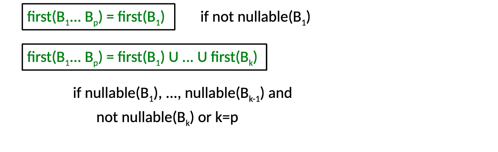
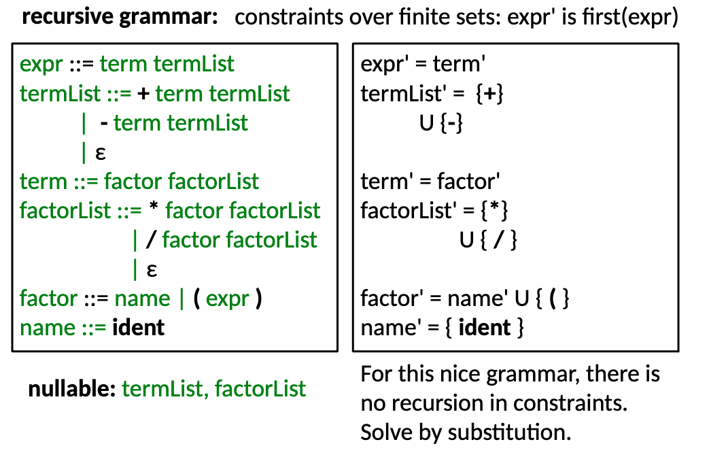
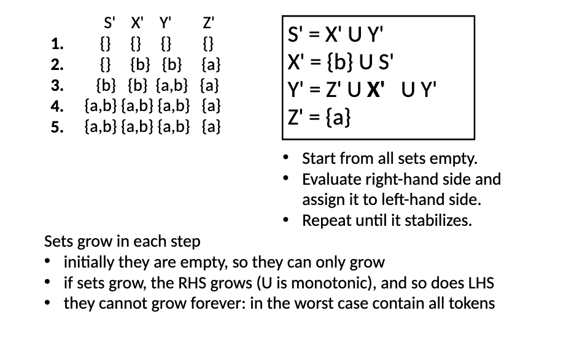
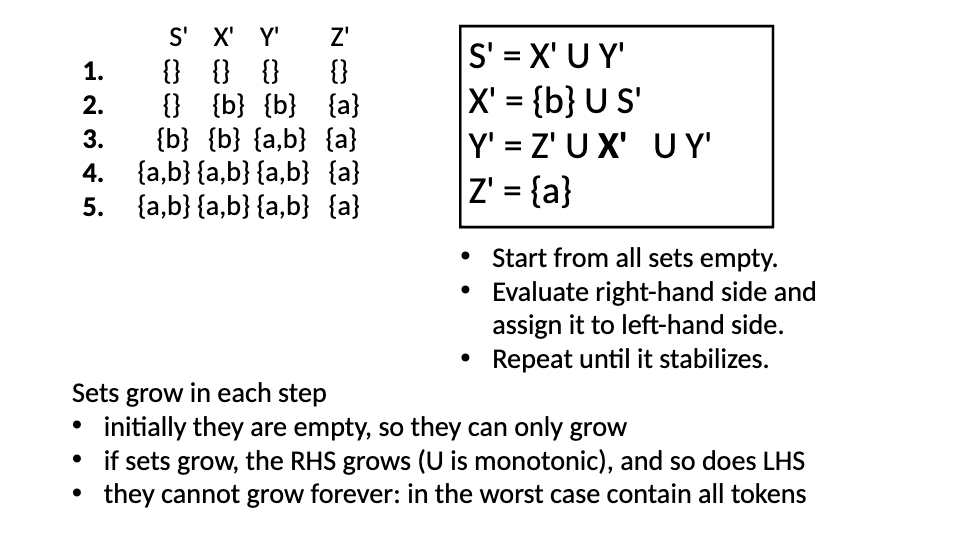

Note: We could use weather epsilon is in the first set to determine if a variable is nullable. But in this course we don’t put epsilon in the first set.
Nullable
- Non terminal is nullable if it can derive
- Computable with iterative solution over constraints if necessary.
- for the iterative approach 0 if not nullable and we and and or
First
Rules for First
- If is a terminal, then
- if i. not nullable.
- if up to are nullable and is not nullable or
Rules for Sequences
if are sequences of variables and terminals, then: 
Solving with Constraints
An easy example where constraints can be solved by substitution:

Complex example which need the Iterative approach
 

- The iterative approach uses set operations to determine the first set of a variable.
Follow